TA0A-1 他們家有幾個人？
TA0A-1 他們家有幾個人？
✔ 四個人。
✗ 三個人。 / 五個人。
keluarga: ayah, ibu, satu anak laki-laki, satu anak perempuan (4 orang) TA0A-2 書在哪裡？
TA0A-2 書在哪裡？
✔ 在桌子上。
✗ 在桌子下。 / 在椅子上。
buku di atas meja; kursi di samping meja TA0A-3 他幾點起床？
TA0A-3 他幾點起床？
✔ 七點半。
✗ 七點。 / 八點半。
laki-laki bangun dari tempat tidur; jam menunjukkan 7.30 TA0A-4 今天天氣怎麼樣？
TA0A-4 今天天氣怎麼樣？
✔ 今天下雨。
✗ 很熱，沒有雨。 / 天氣很好。
hujan turun; orang di jalan basahTA0A-5 · 聽力 Part 2 — 這件衣服多少錢？ 六百五十塊。 問：這件衣服多少錢？
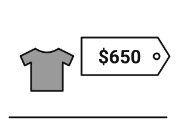
A ✔ · label harga NT$650B · label harga NT$560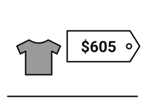
C · label harga NT$605TA0A-6 · 聽力 Part 2 — 請問，你是哪國人？ 我是日本人。 問：這位小姐是哪國人？
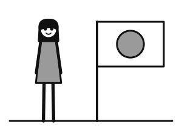
A ✔ · perempuan + bendera Jepang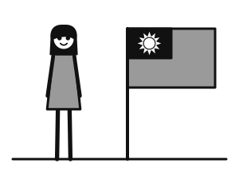
B · perempuan + bendera Taiwan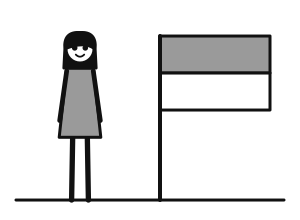
C · perempuan + bendera IndonesiaTA0A-7 · 聽力 Part 2 — 我的手機在哪裡？ 在床上。 問：手機在哪裡？
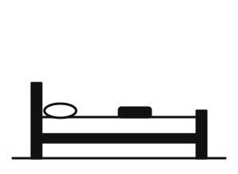
A ✔ · ponsel di atas tempat tidur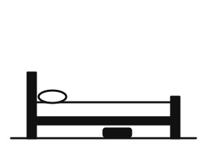
B · ponsel di bawah tempat tidur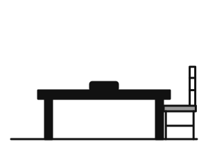
C · ponsel di atas mejaTA0A-8 · 聽力 Part 3 — 你每天幾點睡覺？ 十一點。你呢？ 我十二點睡覺，早上八點起床。 我早上六點起床。 問：這位小姐幾點起床？
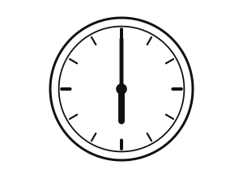
A ✔ · jam 6.00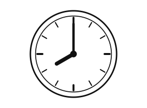
B · jam 8.00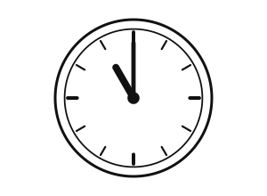
C · jam 11.00TA0A-9 · 聽力 Part 3 — 這是你家人嗎？ 對，這是我爸爸、媽媽和兩個妹妹。 你沒有哥哥嗎？ 沒有，我只有妹妹。 問：這位先生家有幾個人？
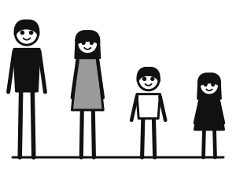
A · keluarga 4 orang B ✔ · keluarga 5 orang
B ✔ · keluarga 5 orang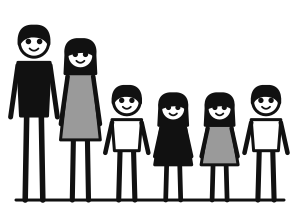
C · keluarga 6 orangTA0A-11 · 閱讀 Part 1 — 今天天氣很冷，風很大。
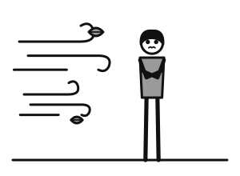
A ✔ · orang kedinginan, angin kencang B · matahari terik, orang kepanasan
B · matahari terik, orang kepanasan C · hujan deras
C · hujan derasTA0A-12 · 閱讀 Part 1 — 我哥哥很高，我很矮。
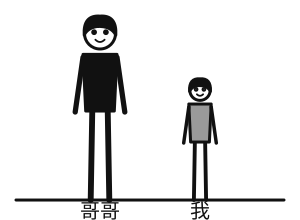
A ✔ · kakak laki-laki tinggi, adik pendek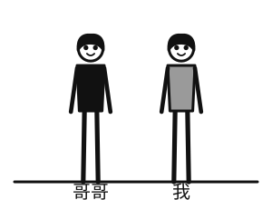
B · dua laki-laki sama tinggi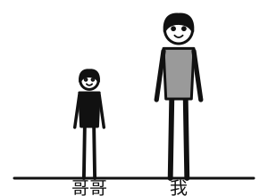
C · kakak pendek, adik tinggiTA0A-13 · 閱讀 Part 2 —
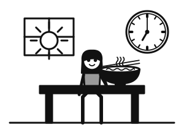
gambar soal · anak perempuan sarapan; jam 7.00 pagi, matahari terbit✔ 她早上七點吃早餐。 / 她晚上七點吃晚餐。 / 她早上七點睡覺。
TA0A-14 · 閱讀 Part 2 —
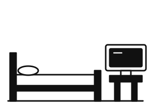
gambar soal · televisi di samping tempat tidur✔ 電視在床旁邊。 / 電視在床上。 / 電視在床下。
TA0A-15 · 閱讀 Part 3 — 這個麵包很（ ），只要五十塊。
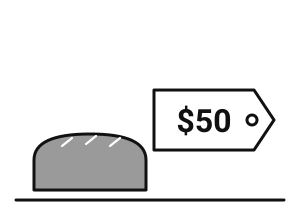
gambar soal · roti dengan label harga NT$50✔ 便宜 / 貴 / 多
TA0A-16 · 閱讀 Part 3 — 他是臺灣人，他說（ ）。
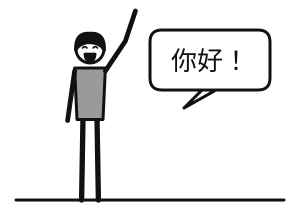
gambar soal · laki-laki menyapa 「你好！」 dengan balon kata✔ 中文 / 臺灣 / 國家
 TA0B-1 他們家有幾個人？
TA0B-1 他們家有幾個人？
✔ 五個人。
✗ 四個人。 / 六個人。
keluarga: ayah, ibu, tiga anak (5 orang) TA0B-2 鞋子在哪裡？
TA0B-2 鞋子在哪裡？
✔ 在床下。
✗ 在床上。 / 在桌子上。
sepatu di bawah tempat tidur TA0B-3 她幾點睡覺？
TA0B-3 她幾點睡覺？
✔ 十點半。
✗ 十點。 / 十一點半。
perempuan tidur; jam menunjukkan 10.30 malam TA0B-4 今天天氣怎麼樣？
TA0B-4 今天天氣怎麼樣？
✔ 今天很熱。
✗ 今天很冷。 / 今天下雨。
matahari terik; orang berkeringatTA0B-5 · 聽力 Part 2 — 這杯咖啡多少錢？ 八十五塊。 問：這杯咖啡多少錢？
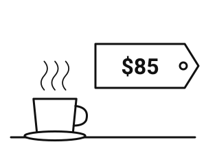
A ✔ · secangkir kopi, NT$85B · secangkir kopi, NT$58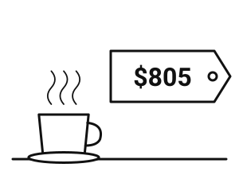
C · secangkir kopi, NT$805TA0B-6 · 聽力 Part 2 — 請問，他是哪國人？ 他是臺灣人。 問：他是哪國人？
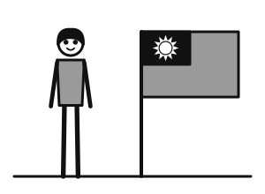
A ✔ · laki-laki + bendera Taiwan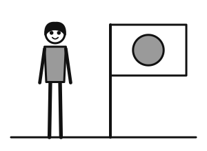
B · laki-laki + bendera Jepang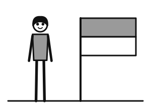
C · laki-laki + bendera IndonesiaTA0B-7 · 聽力 Part 2 — 你的書在哪裡？ 在椅子上。 問：書在哪裡？
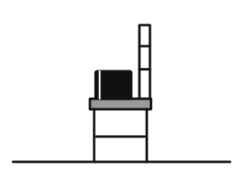
A ✔ · buku di atas kursi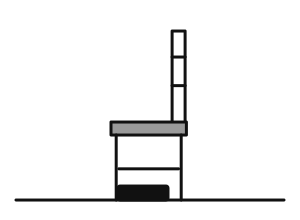
B · buku di bawah kursi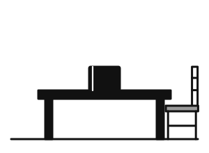
C · buku di atas mejaTA0B-8 · 聽力 Part 3 — 你每天幾點吃早餐？ 七點半。你呢？ 我八點吃早餐，九點上課。 我也九點上課。 問：這位小姐幾點吃早餐？
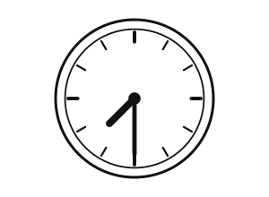
A · jam 7.30 B ✔ · jam 8.00
B ✔ · jam 8.00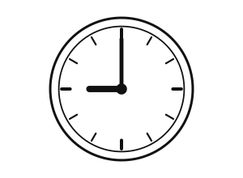
C · jam 9.00TA0B-9 · 聽力 Part 3 — 你有哥哥嗎？ 有，我有兩個哥哥。 你有妹妹嗎？ 沒有。我爸爸媽媽只有一個女兒。 問：這位小姐家有幾個孩子？
 A · dua anak
A · dua anak B ✔ · tiga anak
B ✔ · tiga anak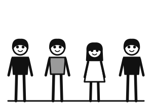
C · empat anakTA0B-11 · 閱讀 Part 1 — 今天下雨，也很冷。
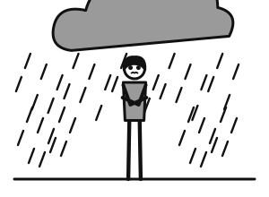
A ✔ · hujan, orang kedinginan B · matahari terik
B · matahari terik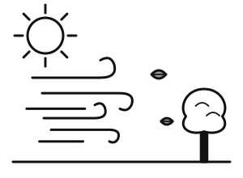
C · berangin tapi cerahTA0B-12 · 閱讀 Part 1 — 我家有三個孩子：兩個兒子和一個女兒。
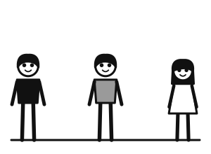
A ✔ · 2 anak laki-laki + 1 anak perempuan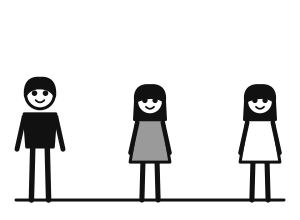
B · 1 anak laki-laki + 2 anak perempuan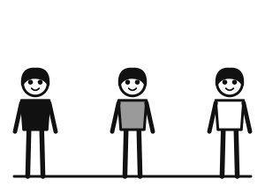
C · 3 anak laki-lakiTA0B-13 · 閱讀 Part 2 —
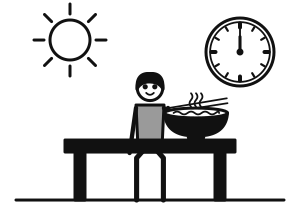
gambar soal · laki-laki makan siang; jam 12.00 siang✔ 他中午十二點吃午餐。 / 他晚上十二點睡覺。 / 他早上十點吃早餐。
TA0B-14 · 閱讀 Part 2 —
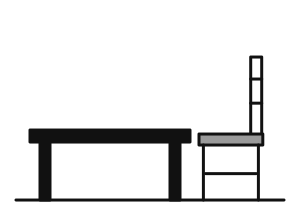
gambar soal · kursi di samping meja✔ 椅子在桌子旁邊。 / 椅子在桌子上。 / 椅子在床上。
TA0B-15 · 閱讀 Part 3 — 這件衣服五千塊，很（ ）。
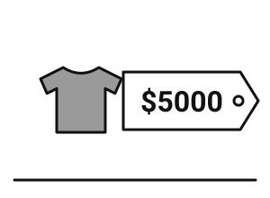
gambar soal · baju dengan label harga NT$5.000✔ 貴 / 便宜 / 少
TA0B-16 · 閱讀 Part 3 — 她是美國人，她說（ ）。
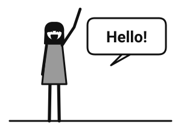
gambar soal · perempuan menyapa 「Hello!」 dengan balon kata✔ 英文 / 中文 / 美國
 TA1A-1 他在做什麼？
TA1A-1 他在做什麼？
✔ 他正在做飯。
✗ 他正在洗澡。 / 他正在睡覺。
laki-laki sedang memasak di dapur TA1A-2 這件外套怎麼樣？
TA1A-2 這件外套怎麼樣？
✔ 太大了。
✗ 太小了。 / 太短了。
perempuan memakai jaket yang kebesaran TA1A-3 哪裡比較冷？
TA1A-3 哪裡比較冷？
✔ 臺北比雅加達冷。
✗ 雅加達比臺北冷。 / 臺北跟雅加達一樣冷。
dua termometer: 臺北 15°C, 雅加達 32°C TA1A-4 她是怎麼來臺灣的？
TA1A-4 她是怎麼來臺灣的？
✔ 她是坐飛機來的。
✗ 她是開車來的。 / 她是坐火車來的。
perempuan turun dari pesawat di bandara, membawa koperTA1A-5 · 聽力 Part 2 — 請問，圖書館怎麼走？ 往前走，到第二個路口左轉。 問：去圖書館要怎麼走？
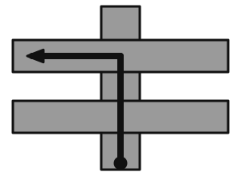
A ✔ · peta: lurus, belok KIRI di persimpangan KEDUA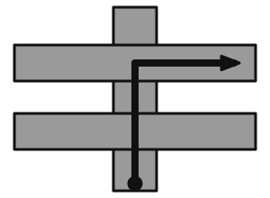
B · peta: lurus, belok KANAN di persimpangan kedua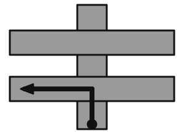
C · peta: lurus, belok kiri di persimpangan PERTAMATA1A-6 · 聽力 Part 2 — 你怎麼了？ 我頭很痛，很不舒服。 問：這位先生怎麼了？
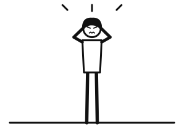
A ✔ · laki-laki memegang kepala, tampak kesakitan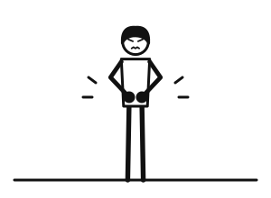
B · laki-laki memegang perut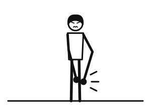
C · laki-laki memegang kakiTA1A-7 · 聽力 Part 2 — 喂，你在做什麼呢？ 我在圖書館看書。 問：這位小姐在做什麼？
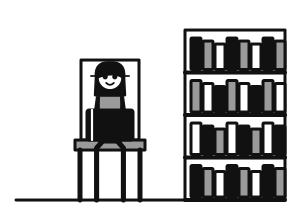
A ✔ · perempuan membaca buku di perpustakaan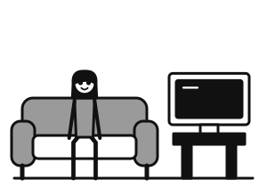
B · perempuan menonton TV di rumah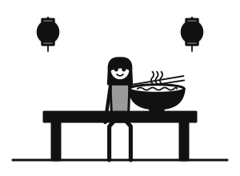
C · perempuan makan di restoranTA1A-8 · 聽力 Part 3 — 今天比昨天冷嗎？ 不，今天比昨天熱。 明天呢？ 明天跟今天一樣熱。 問：明天天氣怎麼樣？
 A ✔ · matahari terik, panas
A ✔ · matahari terik, panas B · dingin, berangin
B · dingin, berangin C · hujan
C · hujanTA1A-9 · 聽力 Part 3 — 請問，車站離這裡遠不遠？ 不遠，走路十分鐘就到了。 怎麼走？ 從這裡往前走，過了銀行就是。 問：車站在哪裡？
A ✔ · peta: stasiun tepat SETELAH bankB · peta: stasiun SEBELUM bankC · peta: stasiun jauh, perlu naik bus
TA1A-11 · 閱讀 Part 1 — 這雙鞋子有一點小，我要大一點的。
A ✔ · laki-laki mencoba sepatu yang kekecilanB · laki-laki memakai sepatu kebesaranC · laki-laki memilih kemeja
TA1A-12 · 閱讀 Part 2 —
gambar soal · keluarga turun dari kereta di stasiun✔ 他們是坐火車來的。 / 他們是坐飛機來的。 / 他們是騎腳踏車來的。
TA1A-13 · 閱讀 Part 3 — 哥哥（ ）弟弟大三歲。
gambar soal · kue ulang tahun: kakak 15 tahun, adik 12 tahun✔ 比 / 跟 / 很
 TA1B-1 她在做什麼？
TA1B-1 她在做什麼？
✔ 她正在洗衣服。
✗ 她正在做飯。 / 她正在看書。
perempuan sedang mencuci baju TA1B-2 這條褲子怎麼樣？
TA1B-2 這條褲子怎麼樣？
✔ 太短了。
✗ 太長了。 / 太大了。
laki-laki memakai celana yang terlalu pendek TA1B-3 誰比較高？
TA1B-3 誰比較高？
✔ 小明比小文高。
✗ 小文比小明高。 / 小明跟小文一樣高。
小明 175 cm berdiri di samping 小文 160 cm TA1B-4 他是怎麼來的？
TA1B-4 他是怎麼來的？
✔ 他是坐火車來的。
✗ 他是坐飛機來的。 / 他是開車來的。
laki-laki turun dari kereta membawa koperTA1B-5 · 聽力 Part 2 — 請問，郵局怎麼走？ 往前走，到第一個路口右轉。 問：去郵局要怎麼走？
A ✔ · peta: lurus, belok KANAN di persimpangan PERTAMA B · peta: lurus, belok KIRI di persimpangan pertama
B · peta: lurus, belok KIRI di persimpangan pertama C · peta: lurus, belok kanan di persimpangan KEDUA
C · peta: lurus, belok kanan di persimpangan KEDUA TA1B-6 · 聽力 Part 2 — 你怎麼了？ 我肚子很痛。 問：這位小姐怎麼了？
A ✔ · perempuan memegang perutB · perempuan memegang kepalaC · perempuan memegang kaki
TA1B-7 · 聽力 Part 2 — 喂，你在做什麼呢？ 我正在公園跑步。 問：這位先生在做什麼？
A ✔ · laki-laki berlari di tamanB · laki-laki berenang C · laki-laki tidur di rumah
C · laki-laki tidur di rumah TA1B-8 · 聽力 Part 3 — 臺北今天天氣怎麼樣？ 下雨，比昨天冷一點。 高雄呢？ 高雄沒下雨，比臺北熱。 問：高雄今天天氣怎麼樣？
A · hujan, dinginB ✔ · cerah, panasC · berangin, dingin
TA1B-9 · 聽力 Part 3 — 請問，書店離這裡遠嗎？ 有一點遠，坐公車要二十分鐘。 走路呢？ 走路要一個小時。 問：坐公車去書店要多久？
A ✔ · bus + jam: 20 menitB · bus + jam: 1 jamC · bus + jam: 10 menit
TA1B-11 · 閱讀 Part 1 — 這件衣服太大了，我要小一點的。
 A ✔ · perempuan memakai kemeja kebesaranB · perempuan memakai kemeja kekecilanC · perempuan mencoba celana
A ✔ · perempuan memakai kemeja kebesaranB · perempuan memakai kemeja kekecilanC · perempuan mencoba celanaTA1B-12 · 閱讀 Part 2 —
gambar soal · laki-laki tiba di sekolah naik sepeda✔ 他是騎腳踏車來的。 / 他是走路來的。 / 他是坐公車來的。
TA1B-13 · 閱讀 Part 3 — 這個書包（ ）那個書包一樣貴。
gambar soal · dua tas sekolah, masing-masing NT$300✔ 跟 / 比 / 也
 TA2A-1 她在做什麼？
TA2A-1 她在做什麼？
✔ 她把書放在書架上。
✗ 她把書放在桌子上。 / 她把書拿到外面去。
perempuan menaruh buku di rak buku TA2A-2 蛋糕怎麼了？
TA2A-2 蛋糕怎麼了？
✔ 蛋糕被狗吃掉了。
✗ 蛋糕被媽媽買回來了。 / 蛋糕被弟弟做好了。
piring kue kosong tinggal remah; anjing di dekatnya dengan remah kue TA2A-3 這家店的東西打幾折？
TA2A-3 這家店的東西打幾折？
✔ 打八折。
✗ 打二折。 / 打九折。
papan toko bertuliskan 「全部八折」 TA2A-4 他現在在做什麼？
TA2A-4 他現在在做什麼？
✔ 他在公司加班。
✗ 他在家休息。 / 他在餐廳吃飯。
laki-laki bekerja di kantor; jam dinding 21.00; kantor gelapTA2A-5 · 聽力 Part 2 — 明天要是下雨，我們還去爬山嗎？ 下雨的話，我們就去看電影吧。 問：要是明天下雨，他們要去哪裡？
 A ✔ · bioskopB · gunungC · pantai
A ✔ · bioskopB · gunungC · pantaiTA2A-6 · 聽力 Part 2 — 你的生日派對怎麼樣？ 朋友們不但都來了，而且還送了我一隻小狗！ 問：這位小姐收到了什麼禮物？
A ✔ · anak anjingB · kue ulang tahunC · buket bunga
TA2A-7 · 聽力 Part 2 — 這張沙發要放在哪裡？ 把它放在客廳的窗戶旁邊吧。 問：沙發要放在哪裡？
A ✔ · sofa di ruang tamu, di samping jendelaB · sofa di kamar tidurC · sofa di ruang tamu, di samping pintu
TA2A-8 · 聽力 Part 3 — 這件毛衣多少錢？ 本來一千塊，現在打八折。 我買兩件，可以再便宜一點嗎？ 兩件的話，一共一千五百塊。 問：這位先生買兩件要付多少錢？
A ✔ · NT$1.500B · NT$1.600C · NT$2.000
TA2A-9 · 聽力 Part 3 — 你怎麼了？臉色不太好。 我肚子痛死了，可能是昨天吃的魚壞了。 吃藥了沒有？ 還沒，我的藥被弟弟拿走了。 問：這位先生的藥怎麼了？
A ✔ · adik laki-laki memegang botol obatB · obat di atas meja C · obat dibuang ke tempat sampah
C · obat dibuang ke tempat sampah TA2A-11 · 閱讀 Part 1 — 請把垃圾拿到外面去。
A ✔ · orang membawa kantong sampah keluar rumahB · orang menaruh sampah di dapurC · orang membersihkan meja
TA2A-12 · 閱讀 Part 2 —
gambar soal · simbol topan di peta cuaca; pengumuman sekolah libur✔ 要是颱風來了，學校就不上課。 / 今天天氣很好，我們去海邊吧。 / 太陽這麼大，別忘了帶帽子。
TA2A-13 · 閱讀 Part 3 — 她不但會做菜，（ ）會唱歌。
gambar soal · perempuan memasak dan bernyanyi di pesta✔ 而且 / 但是 / 所以
 TA2B-1 他在做什麼？
TA2B-1 他在做什麼？
✔ 他把衣服放在箱子裡。
✗ 他把衣服放在椅子上。 / 他把衣服拿到外面去。
laki-laki memasukkan baju ke dalam kotak/koper TA2B-2 杯子怎麼了？
TA2B-2 杯子怎麼了？
✔ 杯子被貓打破了。
✗ 杯子被洗乾淨了。 / 杯子被放在桌子上了。
gelas pecah di lantai; kucing di atas meja TA2B-3 這家店的東西打幾折？
TA2B-3 這家店的東西打幾折？
✔ 打七折。
✗ 打三折。 / 打九折。
papan toko bertuliskan 「全部七折」 TA2B-4 她現在在做什麼？
TA2B-4 她現在在做什麼？
✔ 她在公司開會。
✗ 她在家睡覺。 / 她在學校上課。
perempuan rapat di ruang rapat kantorTA2B-5 · 聽力 Part 2 — 要是明天天氣好，你想做什麼？ 天氣好的話，我想去海邊游泳。 問：天氣好的話，這位小姐想去哪裡？
 A ✔ · pantai
A ✔ · pantai B · gunungC · bioskop
B · gunungC · bioskopTA2B-6 · 聽力 Part 2 — 你的新房間怎麼樣？ 不但很大，而且還有一個大窗戶。 問：這位先生的新房間是哪一個？
A ✔ · kamar besar dengan jendela besarB · kamar kecil dengan jendela besarC · kamar besar tanpa jendela
TA2B-7 · 聽力 Part 2 — 這幾本書要放在哪裡？ 把它們放在書架上吧。 問：書要放在哪裡？
A ✔ · buku di rak bukuB · buku di atas meja C · buku di atas tempat tidur
C · buku di atas tempat tidur TA2B-8 · 聽力 Part 3 — 這雙鞋子打幾折？ 打七折，本來一千塊。 現在是七百塊嗎？ 對。買兩雙的話，第二雙再便宜一百塊。 問：這位小姐買兩雙要付多少錢？
A ✔ · NT$1.300B · NT$1.400C · NT$2.000
TA2B-9 · 聽力 Part 3 — 我的腳踏車不見了！ 是不是被偷了？ 不是，是被我哥哥騎走了。 那你今天只好坐公車了。 問：這位先生的腳踏車怎麼了？
A ✔ · kakak laki-laki mengendarai sepeda ituB · pencuri membawa sepedaC · sepeda rusak
TA2B-11 · 閱讀 Part 1 — 請把窗戶關上。
A ✔ · orang menutup jendelaB · orang membuka jendelaC · orang membersihkan jendela
TA2B-12 · 閱讀 Part 2 —
gambar soal · awan gelap; papan 「可能下大雨」✔ 要是下大雨，我們就在家看電影。 / 天氣這麼好，我們去爬山吧。 / 太陽這麼大，我們去海邊吧。
TA2B-13 · 閱讀 Part 3 — 他不但會打籃球，（ ）會游泳。
gambar soal · laki-laki bermain basket dan berenang✔ 還 / 可是 / 所以